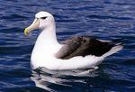

Този сайт е за албатроса.
В него ще научите за албатросите. €½
Ето една снимка на албатрос във водата:
 Albatrosses, of the biological family Diomedeidae, are large seabirds allied to the procellariids, storm-petrels and diving-petrels in the order Procellariiformes (the tubenoses). They range widely in the Southern Ocean and the North Pacific. They are absent from the North Atlantic, although fossil remains show they once occurred there too and occasional vagrants turn up. Albatrosses are amongst the largest of flying birds, and the great albatrosses (genus Diomedea) have the largest wingspans of any extant birds. The albatrosses are usually regarded as falling into four genera, but there is disagreement over the number of species.Albatrosses are highly efficient in the air, using dynamic soaring and slope soaring to cover great distances with little exertion. They feed on squid, fish and krill by either scavenging, surface seizing or diving. Albatrosses are colonial, nesting for the most part on remote oceanic islands, often with several pecies nesting together. Pair bonds between males and females form over several years, with the use of ritualised dances, and will last for the life of the pair. A breeding season can take over a year from laying to fledging, with a single egg laid in each breeding attempt.
Ако не харесвате албатросите - ваш проблем.
| asdf | asdf1 | ||
| информация | информация2 | информация3 | |
| информация | информация1 | информация2 | информация3 |